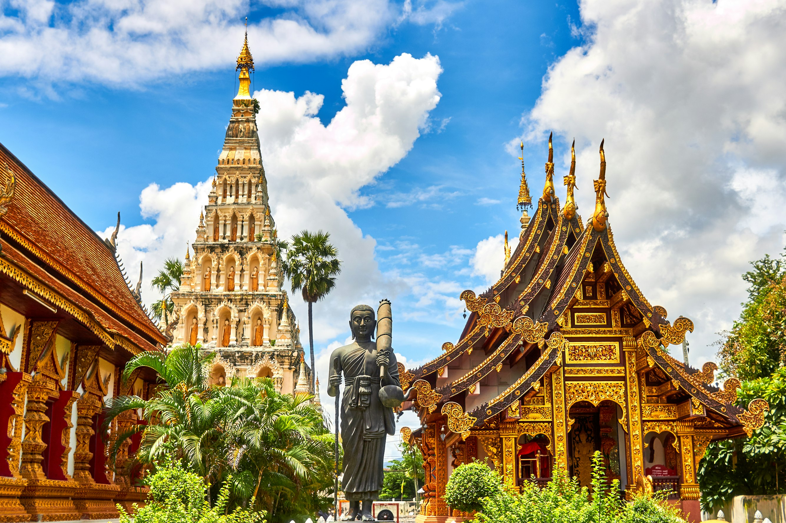

일본의 아름다움을 발견하세요
숨 막히는 풍경부터 활기찬 도시까지, 일본에는 모든 것이 있습니다.
인기 여행지

도쿄
일본의 번화한 수도이자 전통과 현대가 어우러진 도시.
교토
아름다운 사찰, 정원, 그리고 전통적인 게이샤로 유명합니다.
오사카
훌륭한 길거리 음식, 활기찬 밤문화, 그리고 오사카 성으로 유명합니다.
후쿠오카
활기찬 음식 문화와 아름다운 해변으로 유명한 도시입니다.
히로시마
역사적인 평화 기념 공원과 아름다운 이쓰쿠시마 신사로 유명합니다.
삿포로
눈 축제, 맛있는 라멘, 그리고 신선한 해산물로 유명합니다.
나고야
일본의 중요한 산업 중심지이며, 나고야 성과 아쓰타 신궁이 있습니다.
나만의 여행지
오타루
아름다운 운하와 유리 공예로 유명한 로맨틱한 도시입니다.
벳푸
온천으로 유명한 도시로, 다양한 종류의 온천을 즐길 수 있습니다.
나라
사슴 공원과 거대한 불상이 있는 도다이지 절로 유명합니다.
여행 팁
- JR 패스를 구매하세요
- 현금을 소지하세요
- 기본적인 일본어 문구를 배우세요
- 예의를 지키고 현지 관습을 존중하세요